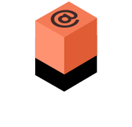
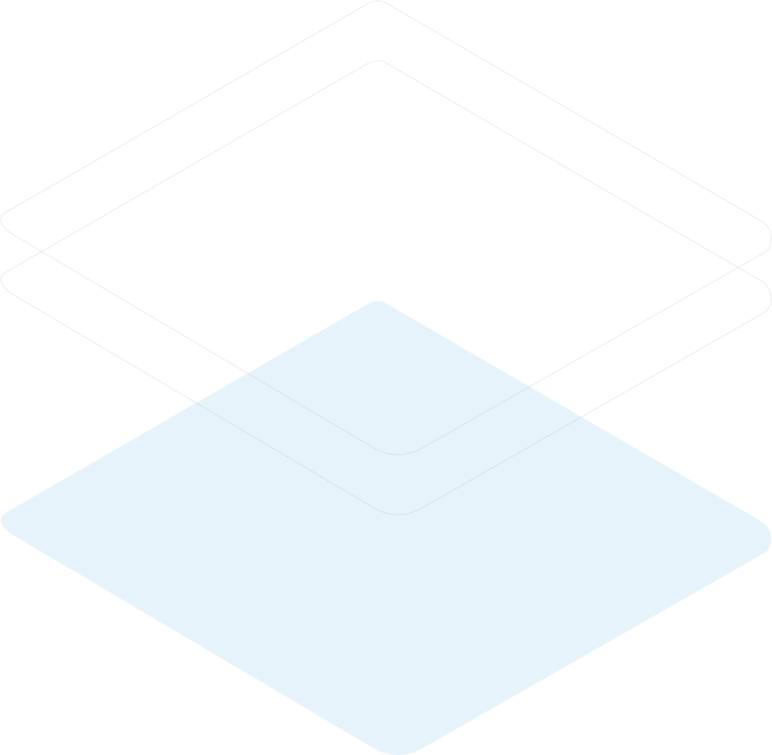

Faq
- Quantos membros da equipe posso convidar?
- Você pode convidar até 2 usuários adicionais no plano Gratuito. Não há limite de membros da equipe para o plano Premium.
- Qual é o tamanho máximo de upload?
- Não mais que 2 GB. Todos os arquivos em sua conta devem caber no espaço de armazenamento alocado.
- Como faço para redefinir minha senha?
- Clique em “Esqueci a senha” na página de login ou em “Alterar senha” na página do seu perfil. Um link de redefinição será enviado para você.
- Posso cancelar minha assinatura?
- Sim! Envie-nos uma mensagem e processaremos sua solicitação sem perguntas.
- Você fornece suporte adicional?
- O suporte por chat e e-mail está disponível 24 horas por dia, 7 dias por semana. As linhas telefônicas estão abertas durante o horário comercial normal.